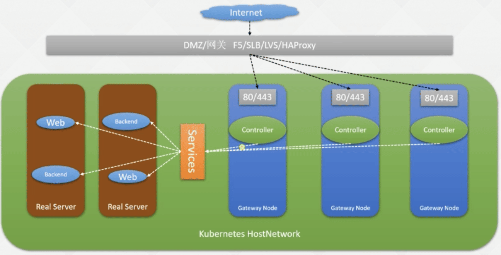

Kubernetes: k8s 运维篇-服务发布Ingress进阶
- TAGS: Kubernetes
k8s 运维篇-服务发布Ingress进阶
最常用的配置
- 通过域名发布服务
- 前后端分离
- 区分手机端和 pc 端
ingress 服务发布架构
- 传统架构
- 浏览器访问 baidu.com
- dns 解析：解析成1.1.1.1
- dmz: 入口网关
- 内网负载均衡：内网负载均衡/nginx/SLB
- 程序：web/java/go
- kubernetes
- 浏览器访问 baidu.com
- dns 解析：解析成1.1.1.1
- dmz: 入口网关
- ingress controller: nginx/haproxy/treafik 相当于内网负载均衡
- Service
- Pod：web/java/go
Ingress 组成
- Kubernetes
- Kind: ingress 相当于传统架构 nginx.conf
- Ingress Controller 相当于传统架构 nginx
Ingress 生产级高可用架构

方式1 推荐
- Pod 使用 HostNetwork 直接使用缩主机网络，不依赖云厂商
方式2：
- Ingress Service loadbalancer 需要云厂商支持
访问3：
- Alb 直接到业务 Pod 需要云厂商支持，不依赖 ingress
方式4：
- Alb 到ingress controller pod 需要云厂商支持，可做内网 nginx
Ingress-nginx和Nginx-ingress的区别
ingress-nginx k8s 官方文档：https://kubernetes.github.io/ingress-nginx/deploy/
nginx-ingress nginx 官方提供 https://github.com/nginxinc/kubernetes-ingress
部署建议：
DaemonSet安装，找几台专门的服务器进行配置ingress (如果没有的足够的资源，就设置QoS，保证ingress最后删除的那个策略)
hostNetwork: true # 这个设置为true
Ingress 安装
按需修改
kubectl apply -f https://raw.githubusercontent.com/kubernetes/ingress-nginx/controller-v1.5.1/deploy/static/provider/cloud/deploy.yaml
如果按方式1修改：
- hostNetwork 为 true
- dnsPolicy 设置为 ClusterFirstWithHostNet
- NodeSelector 绑定指定标签节点
- 类型更改为 kind: DaemonSet
- 设置 ingressClass
Ingress v1 和 v1beta1 区别
创建一个简单的ingress实例
---
apiVersion: networking.k8s.io/v1
kind: Ingress
metadata:
annotations:
kubernetes.io/ingress.class: nginx-prod
nginx.ingress.kubernetes.io/proxy-body-size: 500M
nginx.ingress.kubernetes.io/proxy-connect-timeout: "600"
nginx.ingress.kubernetes.io/proxy-read-timeout: "600"
nginx.ingress.kubernetes.io/proxy-send-timeout: "600"
nginx.ingress.kubernetes.io/server-snippet: |
location ~* /api/actuator {
deny all;
}
nginx.ingress.kubernetes.io/configuration-snippet: |
add_header Strict-Transport-Security 'max-age=31536000; includeSubDomains;' always;
name: taskcenter-cms-nginx
namespace: taskcenter
spec:
rules:
- host: xxl-job-prod.xx.com
http:
paths:
- path: /
#pathType: ImplementationSpecific
pathType: Prefix
backend:
service:
name: xxl-job
port:
number: 8080
1.12版本前
apiVersion: extensions/v1
kind: Ingress
metadata:
name: ingress-test
namespace: ratel-test1
spec:
rules:
- host: ingress.test.com
http:
paths:
- backend:
serviceName: ingress-test # 代理名字为ingress-test
servicePort: 80 # port为80的svc
path: /
# 创建ingress
kubectl create -f ingress-demo.yaml
nginx ingress 多实例部署
https://kubernetes.github.io/ingress-nginx/user-guide/multiple-ingress/
修改：名称空间，class controller, clusterrole, validatingwehookconfiggurations 名称
设置 --controller-class= 和 --ingress-class 不同的值
ingress_name='ingress-nginx-prod' class_name='nginx-prod' sed -i.bak 's@app.kubernetes.io/name: ingress-nginx@app.kubernetes.io/name: '"$ingress_name"'@g' deploy.yaml sed -i 's@namespace: ingress-nginx@namespace: '"$ingress_name"'@g' deploy.yaml sed -i 's@--controller-class=k8s.io/ingress-nginx@--controller-class=k8s.io/'"$ingress_name"'@g' deploy.yaml sed -i 's@--ingress-class=nginx@--ingress-class='"$class_name"'@g' deploy.yaml
IngressClass 同样的值
apiVersion: networking.k8s.io/v1 kind: IngressClass ....... name: nginx-prod spec: controller: k8s.io/ingress-nginx-pord
同时修改以下值：
Nmaespace: name: ingress-nginx-prod
ValidatingWebhookConfiguration: name: ingress-nginx-admission-prod
sed -i 's@--webhook-name=ingress-nginx-admission@--webhook-name=ingress-nginx-admission-prod@g' deploy.yaml
ClusterRole: name: ingress-nginx-prod
ClusterRole: name: ingress-nginx-admission-prod
ClusterRoleBinding:
apiVersion: rbac.authorization.k8s.io/v1 kind: ClusterRoleBinding ...... name: ingress-nginx-prod roleRef: apiGroup: rbac.authorization.k8s.io kind: ClusterRole name: ingress-nginx-prod ......
apiVersion: rbac.authorization.k8s.io/v1 kind: ClusterRoleBinding ....... name: ingress-nginx-admission-prod roleRef: apiGroup: rbac.authorization.k8s.io kind: ClusterRole name: ingress-nginx-admission-prod ......
自定义：
默认aws nlb, 改成clusterip. 自定义configmap
---
apiVersion: v1
kind: Service
metadata:
labels:
app.kubernetes.io/component: controller
app.kubernetes.io/instance: ingress-nginx
app.kubernetes.io/name: ingress-nginx-prod
app.kubernetes.io/part-of: ingress-nginx
app.kubernetes.io/version: 1.11.2
name: ingress-nginx-controller
namespace: ingress-nginx-prod
spec:
ports:
- appProtocol: http
name: http
port: 80
protocol: TCP
targetPort: http
- appProtocol: https
name: https
port: 443
protocol: TCP
targetPort: https
- name: prometheus
port: 10254
protocol: TCP
selector:
app.kubernetes.io/component: controller
app.kubernetes.io/instance: ingress-nginx
app.kubernetes.io/name: ingress-nginx-prod
type: ClusterIP
---
apiVersion: v1
data:
enable-underscores-in-headers: "true"
allow-snippet-annotations: "true"
annotations-risk-level: Critical
compute-full-forwarded-for: "true"
forwarded-for-header: "X-Forwarded-For"
use-forwarded-headers: "true"
enable-brotli: "true"
brotli-level: "6"
kind: ConfigMap
metadata:
labels:
app.kubernetes.io/component: controller
app.kubernetes.io/instance: ingress-nginx
app.kubernetes.io/name: ingress-nginx-prod
app.kubernetes.io/part-of: ingress-nginx
app.kubernetes.io/version: 1.11.2
name: ingress-nginx-controller
namespace: ingress-nginx-prod
生成alb
cat <<\EOF> ingress-alb.yaml
apiVersion: networking.k8s.io/v1
kind: Ingress
metadata:
name: ingress-prod
namespace: ingress-nginx-prod
annotations:
#kubernetes.io/ingress.class: "alb"
alb.ingress.kubernetes.io/group.name: "ingress-prod"
alb.ingress.kubernetes.io/group.order: "900"
alb.ingress.kubernetes.io/load-balancer-name: ingress-prod-alb
alb.ingress.kubernetes.io/scheme: internet-facing
alb.ingress.kubernetes.io/security-groups: sg-0ab7cbb82b63d437d, sg-0473503fd2278b0f5
alb.ingress.kubernetes.io/subnets: subnet-06ff69c0f8b9c5c90, subnet-0dd914d53a539646e, subnet-0905c8c21ce63230b
alb.ingress.kubernetes.io/success-codes: '200-499'
alb.ingress.kubernetes.io/target-type: ip
alb.ingress.kubernetes.io/listen-ports: '[{"HTTP": 80},{"HTTPS": 443}]'
alb.ingress.kubernetes.io/ssl-redirect: '443'
alb.ingress.kubernetes.io/ssl-policy: ELBSecurityPolicy-TLS13-1-2-2021-06
alb.ingress.kubernetes.io/certificate-arn: arn:aws:acm:af-south-1:339712911907:certificate/f69c55bf-8602-443c-af2d-0b9a700d89b5
alb.ingress.kubernetes.io/tags: Techteam=RC, Application=Platform, Name=ingress-prod-alb, Environment=Production, Author=jasper.xu
spec:
ingressClassName: alb
rules:
- host: "*.xxx.com"
http:
paths:
- pathType: ImplementationSpecific
path: /*
backend:
service:
name: ingress-nginx-controller
port:
number: 80
EOF
ingress 中引用ingressClass
apiVersion: networking.k8s.io/v1 kind: Ingress metadata: name: my-ingress spec: ingressClassName: nginx-prod ...
Ingress Redirect 新旧域名替换
ingress 配置说明：https://kubernetes.github.io/ingress-nginx/user-guide/nginx-configuration/
- configmap 全局生效
- ingress 中的 annotations 对当前的 ingress 生产，可覆盖 configmap 配置。
apiVersion: v1
items:
- apiVersion: extensions/v1
kind: Ingress
metadata:
annotations:
nginx.ingress.kubernetes.io/permanent-redirect: https://www.baidu.com # 301重定向到想去的url
name: ingress-test
namespace: ratel-test1
spec:
rules:
- host: ingress.test.com
http:
paths:
- backend:
serviceName: ingress-test
servicePort: 80
path: /
# 创建ingress kubectl edit ingress-demo.yaml # entry 容器查看 kubectl get po -n ingress-nginx kubectl exec -it nginx-ingress-controller-b2442 -n ingress-nginx -- bash cat /etc/nginx/nginx.conf
修改状态码使用 nginx.ingress.kubernetes.io/permanent-redirect-code: '308'
Ingress Rewrite 实现前后端分离
使用场景：
www.baidu.com
- / 能访问到 web 访问路径: /
- /api-a 报404 因为 backend-a 访问路径：/api
- /api-b 报404 因为 backend-b 访问路径：/api
将/something 重写为/:
$ echo '
apiVersion: networking.k8s.io/v1
kind: Ingress
metadata:
annotations:
nginx.ingress.kubernetes.io/rewrite-target: /$2
name: rewrite
namespace: default
spec:
ingressClassName: nginx
rules:
- host: rewrite.bar.com
http:
paths:
- path: /something(/|$)(.*)
pathType: Prefix
backend:
service:
name: http-svc
port:
number: 80
' | kubectl create -f -
浏览器访问
http://rewrite.bar.com/something 跳转到/
注意：多个域名都需要 rewrite 可以写在同一个 ingress 文件中，反之有不需要 rewrite 的域名单独一个 ingress
Inggress 错误代码友好页面
nginx.ingress.kubernetes.io/custom-http-errors: "404,415"
Ingress 实现 https 访问
生产环境中，证书一般放在访问环节中的最外层 DMZ 网关，如 F5/slb/lvs/haproxy。
官网：https://kubernetes.github.io/ingress-nginx/user-guide/tls/
生成本地证书,生产环境，用购买的。
openssl req -x509 -nodes -days 365 -newkey rsa:2048 -keyout ${KEY_FILE} -out ${CERT_FILE} -subj "/CN=${HOST}/O=${HOST}"
openssl req -x509 -nodes -days 365 -newkey rsa:2048 -keyout tls-key -out tls.cert -subj "/CN=test-tls.test.com/O=test-tls.test.com"
# create the secret in the cluster via
kubectl create secret tls ca-cert --key tls.key --cert tls.cert -n ratel-test1
禁用https强制跳转
nginx.ingress.kubernetes.io/ssl-redirect: "false"
echo ' apiVersion: networking.k8s.io/v1 kind: Ingress metadata: annotations: #kubernetes.io/ingress.class: nginx-example nginx.ingress.kubernetes.io/ssl-redirect: "false" # 禁用https强制跳转 name: tls-example-ingress spec: ingressClassName: nginx-example tls: - hosts: - https-example.foo.com secretName: testsecret-tls rules: - host: https-example.foo.com http: paths: - path: / pathType: Prefix backend: service: name: service1 port: number: 80 ' | kubectl create -f -
1.22 版本以上有 secretName 需要加 ingressClassName ，没有则使用默认的
apiVersion: networking.k8s.io/v1
kind: IngressClass
metadata:
labels:
app.kubernetes.io/component: controller
name: nginx-example
annotations:
ingressclass.kubernetes.io/is-default-class: "true"
spec:
controller: k8s.io/ingress-nginx
apiVersion: extensions/v1
kind: Ingress
metadata:
annotations:
nginx.ingress.kubernetes.io/ssl-redirect: "false" # 禁用https强制跳转
generation: 1
name: test-tls
namespace: ratel-test1
spec:
rules:
- host: test-tls.test.com
http:
paths:
- backend:
serviceName: ingress-test
servicePort: 80
path: /
tls:
- hosts:
- test-tls.test.com
secretName: ca-cert
设置默认证书：–default-ssl-certificate=default/foo-tls
更改的ingress-controller的启动参数
Dashboard自定义证书
containers:
- args:
- --auto-generate-certificates=false
- --tls-key-file=server.key
- --tls-cert-file=server.pem
- --token-ttl=21600
- --authentication-mode=basic,token
- --namespace=kubernetes-dashboard
image: kubernetesui/dashboard:v2.0.0-rc5
imagePullPolicy: Always
volumeMounts:
- mountPath: /certs
name: kubernetes-dashboard-new
- mountPath: /tmp
name: tmp-volume
volumes:
- name: kubernetes-dashboard-new
secret:
defaultMode: 420
secretName: kubernetes-dashboard-new
- emptyDir: {}
name: tmp-volume
Ingress 区分手机端和 PC 端
nginx.ingress.kubernetes.io/server-snippet: |
set $agentflag 0;
if ($http_user_agent ~* "(Android|iPhone|Windows|Phone|UC|Kindel)"){
set $agentflag 1;
}
if ($agentflab = 1){
return 301 http://m.test.com;
}
Ingress 基本认证
文档：https://kubernetes.github.io/ingress-nginx/examples/auth/basic/
同样我们还可以在 Ingress Controller 上面配置一些基本的 Auth 认证，比如 Basic Auth，可以用 htpasswd 生成一个密码文件来验证身份验证。
apt install apache2-utils -y [root@k8s-master01 ~]# htpasswd -c auth foo # 账号foo 密码 123456 New password: # 123456 Re-type new password: # 123456 Adding password for user foo # 生成一个auth文件 [root@k8s-master01 ~]# ls auth auth
然后根据上面的 auth 文件创建一个 secret 对象：
[root@k8s-master01 ~]# kubectl create secret generic basic-auth --from-file=auth
secret/basic-auth created
[root@k8s-master01 ~]# kubectl get secret basic-auth -o yaml
apiVersion: v1
data:
auth: Zm9vOiRhcHIxJGZzREw0b0xmJHNuUUNDTFkxbTE2N1BkNUdEMHIwcC8K
kind: Secret
metadata:
name: basic-auth
namespace: default
type: Opaque
然后对上面的 my-nginx 应用创建一个具有 Basic Auth 的 Ingress 对象：
apiVersion: extensions/v1beta1
kind: Ingress
metadata:
name: ingress-with-auth
annotations:
# 认证类型
nginx.ingress.kubernetes.io/auth-type: basic
# 包含 user/password 定义的 secret 对象名
nginx.ingress.kubernetes.io/auth-secret: basic-auth
# 要显示的带有适当上下文的消息，说明需要身份验证的原因
nginx.ingress.kubernetes.io/auth-realm: 'Authentication Required - foo'
spec:
rules:
- host: foo.bar.com
http:
paths:
- path: /
backend:
serviceName: my-nginx
servicePort: 80
直接创建上面的资源对象，然后通过下面的命令或者在浏览器中直接打开配置的域名：
➜ curl -v http://k8s.qikqiak.com -H 'Host: foo.bar.com' '* Rebuilt URL to: http://k8s.qikqiak.com/ '* Trying 123.59.188.12... '* TCP_NODELAY set '* Connected to k8s.qikqiak.com (123.59.188.12) port 80 (#0) > GET / HTTP/1.1 > Host: foo.bar.com > User-Agent: curl/7.54.0 > Accept: */* > < HTTP/1.1 401 Unauthorized < Server: openresty/1.15.8.2 < Date: Sun, 08 Dec 2019 06:44:35 GMT < Content-Type: text/html < Content-Length: 185 < Connection: keep-alive < WWW-Authenticate: Basic realm="Authentication Required - foo" < <html> <head><title>401 Authorization Required</title></head> <body> <center><h1>401 Authorization Required</h1></center> <hr><center>openresty/1.15.8.2</center> </body> </html>
我们可以看到出现了 401 认证失败错误，然后带上我们配置的用户名和密码进行认证：
➜ curl -v http://k8s.qikqiak.com -H 'Host: foo.bar.com' -u 'foo:foo' '* Rebuilt URL to: http://k8s.qikqiak.com/ '* Trying 123.59.188.12... '* TCP_NODELAY set '* Connected to k8s.qikqiak.com (123.59.188.12) port 80 (#0) '* Server auth using Basic with user 'foo' > GET / HTTP/1.1 > Host: foo.bar.com > Authorization: Basic Zm9vOmZvbw== > User-Agent: curl/7.54.0 > Accept: */* > < HTTP/1.1 200 OK < Server: openresty/1.15.8.2 < Date: Sun, 08 Dec 2019 06:46:27 GMT < Content-Type: text/html < Content-Length: 612 < Connection: keep-alive < Vary: Accept-Encoding < Last-Modified: Tue, 19 Nov 2019 12:50:08 GMT < ETag: "5dd3e500-264" < Accept-Ranges: bytes < <!DOCTYPE html> <html> <head> <title>Welcome to nginx!</title> <style> body { width: 35em; margin: 0 auto; font-family: Tahoma, Verdana, Arial, sans-serif; } </style> </head> <body> <h1>Welcome to nginx!</h1> <p>If you see this page, the nginx web server is successfully installed and working. Further configuration is required.</p> <p>For online documentation and support please refer to <a href="http://nginx.org/">nginx.org</a>.<br/> Commercial support is available at <a href="http://nginx.com/">nginx.com</a>.</p> <p><em>Thank you for using nginx.</em></p> </body> </html>
可以看到已经认证成功了。当然出来 Basic Auth 这一种简单的认证方式之外，NGINX Ingress Controller 还支持一些其他高级的认证，比如 OAUTH 认证之类的。
Ingress 实现黑白名单
- 黑名单：拒绝某段IP访问
- 白名单：只允许某段IP访问
- Annotations：只对指定的ingress生效
- ConfigMap：全局生效
黑名单可以使用ConfigMap去配置，白名单建议使用Annotations去配置
白名单配置（建议使用Annotations）
annotations: nginx.ingress.kubernetes.io/whitelist-source-range 10.0.0.0/24,172.10.0.1 # 后面可以跟一个或者多个IP
黑名单设置（建议使用ConfigMap）（这是全局生效的）
# 因为黑名单可能会不定时加上去，防止恶意攻击的。所以用ConfigMap（热更新） # 1、更改ingress-nginx的cm [root@k8s-master01 ~]# kubectl edit cm -n ingress-nginx ingress-nginx-controller -oyaml apiVersion: v1 data: # 加上data block-cidrs: 192.168.1.201 # 加上block-cidrs，后面也可以跟多个IP，隔开 kind: ConfigMap metadata: annotations: meta.helm.sh/release-name: ingress-nginx meta.helm.sh/release-namespace: ingress-nginx labels: app.kubernetes.io/component: controller app.kubernetes.io/instance: ingress-nginx app.kubernetes.io/managed-by: Helm app.kubernetes.io/name: ingress-nginx app.kubernetes.io/version: 0.43.0 helm.sh/chart: ingress-nginx-3.20.1 name: ingress-nginx-controller namespace: ingress-nginx # 2、删除ingress-nginx的pod，重新加载配置 [root@k8s-master01 ~]# kubectl get po -n ingress-nginx [root@k8s-master01 ~]# kubectl delete po -n ingress-nginx --all # 生产一个一个删，防止配置错误都挂了 # 3、在192.168.1.201节点上，访问ingress代理的域名，然后403表示配置成功
针对某个域名设置黑名单–snippet
# 比如ingress代理了www.test.com这个域名，那么想针对这个域名（www.test.com）设置访问黑名单，就编辑这个ingress即可 apiVersion: networking.k8s.io/v1beta1 kind: Ingress metadata: # 在annotations下面加上这几行配置，有多个IP可以deny多个 annotations: nginx.ingress.kubernetes.io/server-snippet: |- deny 192.168.1.101; deny 192.168.1.102; allow all; # 然后在deny的主机上访问 www.test.com 就403 [root@k8s-master02 ~]# curl ngdemo.qikqiak.com <html> <head><title>403 Forbidden</title></head> <body> <center><h1>403 Forbidden</h1></center> <hr><center>nginx</center> </body> </html>
Ingress 访问速率限制
https://kubernetes.github.io/ingress-nginx/user-guide/nginx-configuration/annotations/#rate-limiting
nginx.ingress.kubernetes.io/limit-connections 1 # 连接数只有一个 nginx.ingress.kubernetes.io/limit-rps 1 # 每秒请求数
Ingress 实现灰度发布/金丝雀发布
准备2个svc，用于演示
kubectl expose deploy my-nginx1 --port 80 kubectl expose deploy my-nginx2 --port 8 [root@k8s-master01 app]# kubectl get svc NAME TYPE CLUSTER-IP EXTERNAL-IP PORT(S) AGE my-nginx ClusterIP 10.104.87.14 <none> 80/TCP 91m my-nginx1 ClusterIP 10.103.175.67 <none> 80/TCP 2m12s [root@k8s-master01 app]# curl 10.104.87.14 Canary v1 [root@k8s-master01 app]# curl 10.103.175.67 Canary v2
开启基于ingress的灰度发布
官网参考：https://github.com/kubernetes/ingress-nginx/blob/master/docs/user-guide/nginx-configuration/annotations.md#canary # 开启了灰度发布，才能在同一个ns下创建2个同样域名 # 先创建一个普通的ingress，通过canary.test.com就可以访问到svc my-nginx，版本是v1 apiVersion: extensions/v1beta1 kind: Ingress metadata: name: my-nginx annotations: kubernetes.io/ingress.class: "nginx" spec: rules: - host: canary.test.com # 将域名映射到 my-nginx 服务 http: paths: - path: / backend: serviceName: my-nginx # 将所有请求发送到 my-nginx 服务的 80 端口 servicePort: 80
- 基于权重的流量调度
**基于权重**：基于权重的流量切分的典型应用场景就是蓝绿部署，可通过将权重设置为 0 或 100 来实现。例如，可将 Green 版本设置为主要部分，并将 Blue 版本的入口配置为 Canary。最初，将权重设置为 0，因此不会将流量代理到 Blue 版本。一旦新版本测试和验证都成功后，即可将 Blue 版本的权重设置为 100，即所有流量从 Green 版本转向 Blue。
apiVersion: extensions/v1beta1 kind: Ingress metadata: name: my-nginx1 annotations: kubernetes.io/ingress.class: "nginx" spec: rules: - host: canary.test.com http: paths: - path: / backend: serviceName: my-nginx1 servicePort: 80 # 这个是代理V2的ingress，如果使用相同域名，创建会报错 [root@k8s-master01 app]# kubectl apply -f bbb.yaml Error from server (BadRequest): error when creating "bbb.yaml": admission webhook "validate.nginx.ingress.kubernetes.io" denied the request: host "canary.test.com" and path "/" is already defined in ingress default/my-nginx # 基于权重 annotations: nginx.ingress.kubernetes.io/canary: "true" # 要开启灰度发布机制，首先需要启用 Canary nginx.ingress.kubernetes.io/canary-weight: "30" # 切30%的流量到v2去，设置100就全部切过去了 # 创建后查看ingress，可以看到创建了2个代理相同域名的ingress [root@k8s-master01 app]# kubectl get ingress NAME CLASS HOSTS ADDRESS PORTS AGE my-nginx <none> canary.test.com 10.101.29.125 80 20m my-nginx1 <none> canary.test.com 10.101.29.125 80 3m6s验证是否配置成功：
[root@k8s-master02 ~]# for i in $(seq 1 3); do curl -s -H canary.test.com; done Canary v1 Canary v2 Canary v1
- 安装 ruby 测试
脚本
vim test.rb counts = Hash.new(0) 100.times do output = `curl -s canary.test.com | grep 'Canary'| awk '{print $2}'| awk -F"<" '{print $1}'` counts[output.strip.split.last += 1 end puts counts
测试
yum install ruby -y ruby test.rb
- 安装 ruby 测试
- 基于Request Header（还有个never、always不进行演示）
基于 Request Header: 基于 Request Header 进行流量切分的典型应用场景即灰度发布或 A/B 测试场景
注意: 当 Request Header 设置为 never 或 always 时，请求将不会或一直被发送到 Canary 版本 ，对于任何其他 Header 值，将忽略 Header，并通过优先级将请求与其他 Canary 规则进行优先级的比较。
# 基于 Request Header annotations: kubernetes.io/ingress.class: nginx nginx.ingress.kubernetes.io/canary: "true" # 要开启灰度发布机制，首先需要启用 Canary nginx.ingress.kubernetes.io/canary-by-header-value: canary # 基于header的流量切分 value nginx.ingress.kubernetes.io/canary-by-header: user # 基于header的流量切分 key nginx.ingress.kubernetes.io/canary-weight: "30" # 会被忽略，因为配置了 canary-by-headerCanary版本
验证：
➜ for i in $(seq 1 10); do curl -s -H "canary: never" echo.qikqiak.com | grep "Hostname"; done Hostname: production-856d5fb99-d6bds Hostname: production-856d5fb99-d6bds Hostname: production-856d5fb99-d6bds Hostname: production-856d5fb99-d6bds Hostname: production-856d5fb99-d6bds Hostname: production-856d5fb99-d6bds Hostname: production-856d5fb99-d6bds Hostname: production-856d5fb99-d6bds Hostname: production-856d5fb99-d6bds Hostname: production-856d5fb99-d6bds # 流量全部切到V2了，从而实现灰度发布 [root@k8s-master02 ~]# for i in $(seq 1 5); do curl -s -H "user: canary" canary.test.com; done v2 v2 v2 v2 v2
- 基于 Cookie
基于 Cookie ：与基于 Request Header 的 annotation 用法规则类似。例如在 A/B 测试场景下，需要让地域为北京的用户访问 Canary 版本。那么当 cookie 的 annotation 设置为
nginx.ingress.kubernetes.io/canary-by-cookie: "users_from_Beijing"，此时后台可对登录的用户请求进行检查，如果该用户访问源来自北京则设置 cookieusers_from_Beijing的值为 always，这样就可以确保北京的用户仅访问 Canary 版本。annotations: kubernetes.io/ingress.class: nginx nginx.ingress.kubernetes.io/canary: "true" # 要开启灰度发布机制，首先需要启用 Canary nginx.ingress.kubernetes.io/canary-by-cookie: "users_from_Beijing" # 基于 cookie nginx.ingress.kubernetes.io/canary-weight: "30" # 会被忽略，因为配置了 canary-by-cookie ➜ for i in $(seq 1 10); do curl -s -b "users_from_Beijing=always" echo.qikqiak.com | grep "Hostname"; done Hostname: canary-66cb497b7f-48zx4 Hostname: canary-66cb497b7f-48zx4 Hostname: canary-66cb497b7f-48zx4 Hostname: canary-66cb497b7f-48zx4 Hostname: canary-66cb497b7f-48zx4 Hostname: canary-66cb497b7f-48zx4 Hostname: canary-66cb497b7f-48zx4 Hostname: canary-66cb497b7f-48zx4 Hostname: canary-66cb497b7f-48zx4 Hostname: canary-66cb497b7f-48zx4
Ingress Nginx 自定义错误页
nginx.ingress.kubernetes.io/server-snippet: error_page 404 https://www.baidu.com # 如果访问不存在，跳转到baidu # 和nginx的配置没有区别
官方错误页面
Ingress Nginx 监控
步骤：https://kubernetes.github.io/ingress-nginx/user-guide/monitoring/
配置grafana: https://github.com/kubernetes/ingress-nginx/tree/master/deploy/grafana/dashboards
Service manifest
---
apiVersion: v1
kind: Service
..
spec:
ports:
- name: prometheus
port: 10254
targetPort: prometheus
..
Deployment manifest:
---
apiVersion: apps/v1
kind: Deployment
...
spec:
template:
metadata:
annotations:
prometheus.io/scrape: "true"
prometheus.io/port: "10254"
spec:
containers:
- args:
..
- --enable-metrics=true
ports:
- name: prometheus
containerPort: 10254
..
1、背景和环境概述
本文中涉及到的环境中、 prometheus监控和grafana基本环境已部署好。 在 nginx ingress controller 的官方文档中对监控有相应描述 https://kubernetes.github.io/ingress-nginx/user-guide/monitoring/
2、修改prometheus配置
修改prometheus的配置，增加对ingress nginx的监控配置，可按照官方yaml 进行修改：
vim prometheus-configmap.yaml
- job_name: 'ingress-nginx-endpoints'
kubernetes_sd_configs:
- role: pod
namespaces:
names:
- ingress-nginx
relabel_configs:
- source_labels: [__meta_kubernetes_pod_annotation_prometheus_io_scrape]
action: keep
regex: true
- source_labels: [__meta_kubernetes_pod_annotation_prometheus_io_scheme]
action: replace
target_label: __scheme__
regex: (https?)
- source_labels: [__meta_kubernetes_pod_annotation_prometheus_io_path]
action: replace
target_label: __metrics_path__
regex: (.+)
- source_labels: [__address__, __meta_kubernetes_pod_annotation_prometheus_io_port]
action: replace
target_label: __address__
regex: ([^:]+)(?::\d+)?;(\d+)
replacement: $1:$2
- source_labels: [__meta_kubernetes_service_name]
regex: prometheus-server
action: drop
重新apply一下configmap
kubectl apply -f prometheus-configmap.yaml
或者使用servicemonitor
cat <<\EOF> servicemonitor.yaml
---
#ingress-nginx
apiVersion: monitoring.coreos.com/v1
kind: ServiceMonitor
metadata:
name: ingress-nginx-dev
namespace: monitoring
labels:
app.kubernetes.io/name: ingress-nginx-dev
app.kubernetes.io/instance: ingress-nginx
release: prometheus
spec:
endpoints:
- path: /metrics
port: prometheus
#interval: 15s
namespaceSelector:
matchNames:
- ingress-nginx-dev
selector:
matchLabels:
app.kubernetes.io/component: controller
app.kubernetes.io/instance: ingress-nginx
app.kubernetes.io/name: ingress-nginx-dev
app.kubernetes.io/part-of: ingress-nginx
app.kubernetes.io/version: 1.10.1
EOF
3、检查是否生效
打开prometheus界面，查看target中是否有 ingress nginx 的相关记录
检查查询取值
4、配置grafana图形
在grafana图形中导入模板，模板可以按照官方给出的json文件操作，下载此json文件，在grafana中导入即可
查看图形
5、告警规则
可以从官方获得. 从helm包找到告警规则
helm show values ingress-nginx --repo https://kubernetes.github.io/ingress-nginx helm pull ingress-nginx --repo https://kubernetes.github.io/ingress-nginx helm upgrade --install ingress-nginx ingress-nginx \ --repo https://kubernetes.github.io/ingress-nginx \ -n default-info \ --create-namespace \ --set controller.metrics.enabled=true \ --set-string controller.podAnnotations."prometheus\.io/scrape"="true" \ --set-string controller.podAnnotations."prometheus\.io/port"="10254" --dry-run -oyaml
多域名指向同一后端
---
apiVersion: networking.k8s.io/v1
kind: Ingress
metadata:
name: cici
namespace: dev
spec:
ingressClassName: nginx-dev
rules: #多域名指向同一后端
- host: cicitest.xxx.online
http: &cici_rules
paths:
- backend:
service:
name: cici-svc
port:
number: 80
path: /
pathType: ImplementationSpecific
- host: ci-kjr6wutest.xxx.online
http: *cici_rules
- host: ci-vnioustest.xxx.online
http: *cici_rules
ConfigMap
常用配置
apiVersion: v1 kind: ConfigMap metadata: name: ingress-nginx-controller namespace: ingress-nginx-dev data: enable-underscores-in-headers: "true" #识别有_下划线的http头部。默认：false allow-snippet-annotations: "true" #开启所有注释配置。默认：false worker-cpu-affinity: auto #将工作进程绑定到 CPU 集合。默认:"" 。""空字符串表示不应用亲和力。auto将工作进程自动绑定到可用的 CPU。 max-worker-connections: '65536' #设置每个工作进程可以同时打开的最大连接数。0 将使用max-worker-open-files的值。默认： 16384 proxy-body-size: 20m #设置客户端请求主体的最大允许大小。默认：1m proxy-connect-timeout: '10' #设置与代理服务器建立连接的超时时间。默认：5 单位秒 ssl-redirect: 'false' #如果服务器具有 TLS 证书（在 Ingress 规则中定义），则将重定向（301）的全局值设置为 HTTPS。默认： true upstream-keepalive-timeout: '900' #设置与上游服务器保持空闲连接打开的超时时间。默认： 60 allow-backend-server-header: 'true' #启用从后端返回标头服务器，而不是通用的 nginx 字符串。默认：false
自定义日志格式
log-format-upstream
data: log-format-escape-json: 'true' log-format-upstream: >- {"remote_addr":"$remote_addr","remote_port":"$remote_port", "http_x_forwarded_for":"$http_x_forwarded_for","time_local":"$time_local", "server_protocol":"$server_protocol","request_method":"$request_method", "scheme":"$scheme","host":"$host","request_uri":"$request_uri","url":"$scheme://$host$request_uri", "status":"$status","body_bytes_sent":"$body_bytes_sent","request_time":"$request_time", "http_referer":"$http_referer","http_user_agent":"$http_user_agent","request_length":"$request_length", "proxy_alternative_upstream_name":"$proxy_alternative_upstream_name","proxy_upstream_name":"$proxy_upstream_name", "upstream_addr":"$upstream_addr","upstream_response_time":"$upstream_response_time","upstream_status":"$upstream_status", "post_data":"$request_body", "country":"$http_country","client_ts":"$http_device_time","real_ts":"$msec", "client-id": "$http_client_id"}
记录真实ip
业务应用经常有需要用到用户真实ip的场景，比如，用户ip记录与审计，ip限制 等功能，通常，用户ip的传递依靠的是X-Forwarded-*参数。Ingress-Nginx默认 会通过X-Forward-For和X-Real-IP来透传客户端IP，但是当客户端主动在请求头 里指定了X-Forward-For和X-Real-IP，会导致服务端获取不到真实的客户端IP。
修改configmap配置：
--- apiVersion: v1 data: compute-full-forwarded-for: "true" forwarded-for-header: "X-Forwarded-For" use-forwarded-headers: "true" kind: ConfigMap
静态文件压缩
ingress-nginx支持gzip, brotli压缩，默认关闭。 brotli压缩率性能更好些
开启gzip压缩
修改configmap
apiVersion: v1 kind: ConfigMap metadata: name: ingress-nginx-configuration data: use-gzip: "true" gzip-level: "6"
开启brotli压缩
https://kubernetes.github.io/ingress-nginx/user-guide/nginx-configuration/configmap/#enable-brotli
修改configmap
apiVersion: v1 kind: ConfigMap metadata: name: ingress-nginx-configuration data: enable-brotli: "true" brotli-level: "6"
引用缓存
---
apiVersion: v1
data:
enable-underscores-in-headers: "true" #识别有_下划线的http头部
allow-snippet-annotations: "true" #开启所有注释配置
#设置全局缓存
http-snippet: |-
proxy_cache_path /tmp/section_group_test levels=1:2 keys_zone=section_group_test:20m inactive=7d max_size=1g;
kind: ConfigMap
metadata:
labels:
app.kubernetes.io/component: controller
app.kubernetes.io/instance: ingress-nginx-dev
app.kubernetes.io/name: ingress-nginx-dev
app.kubernetes.io/part-of: ingress-nginx
app.kubernetes.io/version: 1.10.1
name: ingress-nginx-controller
namespace: ingress-nginx-dev
引用缓存
---
apiVersion: networking.k8s.io/v1
kind: Ingress
metadata:
annotations:
nginx.ingress.kubernetes.io/proxy-body-size: 50M
nginx.ingress.kubernetes.io/proxy-connect-timeout: "600"
nginx.ingress.kubernetes.io/proxy-read-timeout: "600"
nginx.ingress.kubernetes.io/proxy-send-timeout: "600"
#nginx.ingress.kubernetes.io/http-snippet: |
# proxy_cache_path /tmp/api_cache/section_group_test levels=1:2 keys_zone=section_group_test:20m inactive=7d max_size=1g;
#modify ingress-controler configmap
nginx.ingress.kubernetes.io/server-snippet: |
location ~* /api/actuator {
deny all;
}
location ^~ /app/complain {
return 200;
}
location /xc/episodic_drama/dramas/app/compilations_40.txt {
proxy_pass http://xxxxokio41x-us-west-2c.s3.us-west-2.vpce.amazonaws.com;
}
location = /xc/section_group {
add_header X-Cache $upstream_cache_status;
proxy_cache section_group_test;
proxy_cache_methods GET POST;
proxy_cache_valid 200 206 304 301 302 1m;
proxy_cache_key $scheme$http_origin$request_method$uri$http_client_id$arg_sectionGroupTypeValue;
proxy_pass http://xc-server-svc.dev1:80/;
}
nginx.ingress.kubernetes.io/configuration-snippet: |
add_header Strict-Transport-Security 'max-age=31536000; includeSubDomains;' always;
name: xc
namespace: dev
spec:
ingressClassName: nginx-dev
rules:
- host: xc.xxx.online
http:
paths:
- backend:
service:
name: xc-server-svc
port:
number: 80
path: /
pathType: ImplementationSpecific
指定文件缓存
#ingress 的 中新增如下内容，可以通过request_uri按需配置指定文件的cache control： annotations: nginx.ingress.kubernetes.io/configuration-snippet: > more_set_headers "cache-Control: no-cache, no-store"; if ($request_uri ~* \.(?:ico|css|js|gif|jpe?g|png|svg|woff2|woff|ttf|eo|mp3|glb)$) { more_set_headers "cache-control: public, max-age=2592000"; }